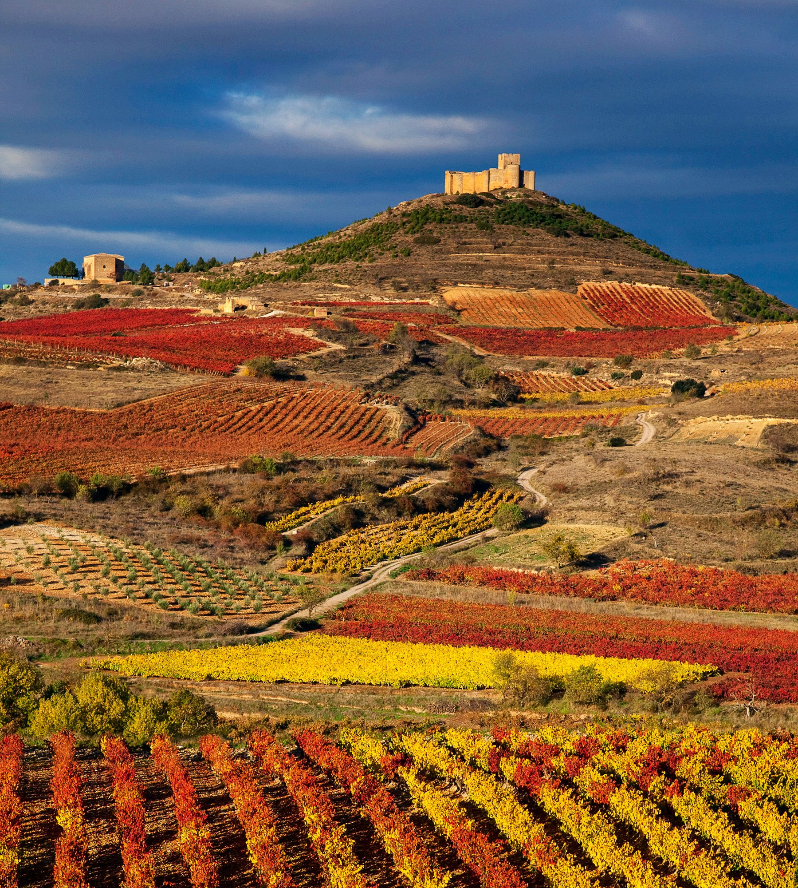

La Rioja18 de Febrero 2023

Grupo Mínimo: 10 personas
Precio: 595 € Duración: 5 dias
El viaje incluye:
- Autocar de lujo, incluyendo gel hidroalcohólico, 4 mascarillas / persona, 1 botella
de agua de 33 cl por persona / día.
- Guía acompañante todo el circuito,especialista en el destino.
- Audio guias para todas las visitas a pie y poder mantener más distancia entre
participantes.
- Hotel **** los Bracos o simliar situado en Logroño.
- 3 desayunos buffet y 4 almuerzos con vino y agua incluido.
- Seguro de viajes con anulación incluye Covid 19.
Itinerario:
DÍA 1. CATALUNYA - TUDELA - LOGROÑO Presentación en los diferentes puntos de origen
a primera hora de la mañana. Salida hacia La Rioja. Atravesaremos Aragón y los Monegros
y entraremos en la Comunidad Foral de Navarra, hasta Tudela. Almuerzo. Por la tarde,
continuación de la ruta atrave- sando el valle del Ebro hasta llegar a Logroño, capital
de la Rioja, donde realizaremos una visita panorámica, resaltando su Catedral, llamada
la “Redonda”, su pintoresco centro histórico y diversos palacios de interés como el
de Espartero. Finalizada la visita nos dirigiremos al hotel. Alojamiento.
DÍA 2. LOGROÑO - HARO - BRIONES - SAN VICENTE DE LA SONSIERRA. Desayuno. Salida por
la mañana para realizar la llamada “Ruta del vino”, compartiendo esta actividad gastronómica
con el rico patrimonio de esta comunidad. Iniciaremos el recorrido en Haro, lugar
donde tendremos nuestro primer contacto con el vino visitando también una de sus Bodegas,
donde tendremos la oportunidad de realizar la degustación de sus famosos “caldos”.
Almuerzo. Por la tarde visitaremos el pequeño y pintoresco pueblo de Briones, antigua
ciudad-fortaleza y una de les más bonitas locaidades de la Rioja, donde el tiempo
parece haber parado en la época medieval, resaltando un conjunto histórico y monumental
espectacular. Seguiremos camino hacia lariojana villa de San Vicente de la Sonsierra,conocida
por la fiesta de los Picaos de Semana Santa, el conjunto de su castillo y fortaleza
y la iglesia románica de Santa María de la Piscina. Regreso al hotel. Alojamiento.
DÍA 3. LOGROÑO - MONASTERIO DE YUSO - LAGUARDIA - LCIEGO Desayuno. Por la mañana realizaremos
la excursión al Monasterio de Yuso, considerado como el Escorial de La Rioja, que
cuenta con uno de los archivos más importantes de España en lo que a historia medieval
se refiere, fue declarado Patrimonio de la Humanidad en 1997.Antes del almuerzo haremos
un curso de cata en el centro enológico Villa Lucia donde además de deleitar los sentidos,
conoceremos algo de su historia en esta zona. Almuerzo . Por la tarde, visitaremos
la singular “Rioja Alavesa”, conoceremos la encantadora e importante villa histórica
de Laguardia,con un patrimonio arquitectónico y capital la Rioja Alavesa. En esta
amurallada calidad se encuentran dos destacadas bodegas por su arquitectura y diseño.
Bodega Ysios y Bodega Viña Real, diseñadas por Calatrava y por Mazieres, a continuación
nos dirigiremos a El Ciego donde el arquitecto Frank Gehry,creador de verdaderas obras
arte como museo Guggenheim, a construido el hotel Marqués de Riscal, junto a las bodegas
del mismo nombre. Regreso hotel. Alojamiento.
DÍA 4. LOGROÑO - BUJARALOZ - CATALUNYADesayuno y tiempo libre hasta la hora de iniciar
el viaje de regreso. Almuerzo en ruta. Por tarde iniciaremos la ruta de regreso nuestra
ciudad. Llegada y fin del viaje. Fin de nuestros servicios.